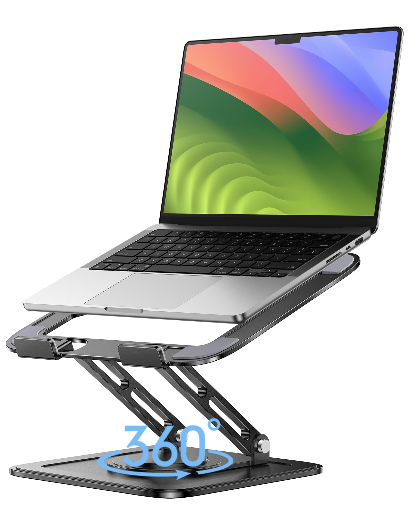
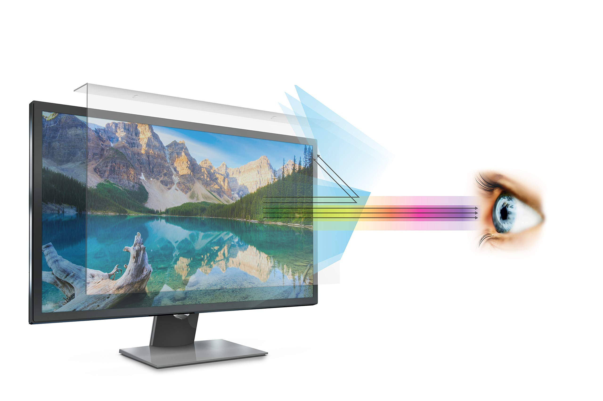
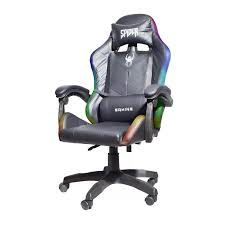
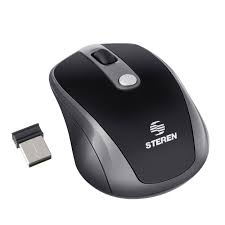
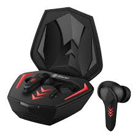

|
Detalle de ProductosInformación completa de nuestros productos tecnológicos |
|
|
Detalle de ProductosInformación completa de nuestros productos tecnológicos |

Precio: $900
Categoría: Laptops
Disponibilidad: Disponible
Laptop diseñada para alto rendimiento, productividad y bienestar visual.
| Característica | Detalle |
|---|---|
| Procesador | Intel Core i7 |
| RAM | 16 GB |
| SSD | 1 TB |

Precio: $300
Categoría: Monitores
Disponibilidad: Disponible
Monitor diseñado para reducir la fatiga visual y mejorar la comodidad.
| Característica | Detalle |
|---|---|
| Tamaño | 27 pulgadas |
| Resolución | Full HD |
| Frecuencia | 144 Hz |

Precio: $250
Categoría: Mobiliario
Disponibilidad: Disponible
Silla ergonómica diseñada para largas sesiones de trabajo o gaming.
| Característica | Detalle |
|---|---|
| Material | Cuero sintético |
| Soporte | Lumbar y cervical |
| Altura | Ajustable |

Precio: $40
Categoría: Accesorios
Disponibilidad: Disponible
Mouse inalámbrico moderno y preciso para oficina o gaming.
| Característica | Detalle |
|---|---|
| Conexión | Inalámbrica |
| Iluminación | RGB |
| DPI | 12000 DPI |

Precio: $80
Categoría: Audio
Disponibilidad: Disponible
Audífonos modernos con cancelación de ruido y sonido envolvente.
| Característica | Detalle |
|---|---|
| Conexión | Bluetooth |
| Batería | 20 horas |
| Micrófono | Integrado |
Mantener descansos frecuentes para proteger la salud visual.
Utilizar sillas ergonómicas para mejorar la postura corporal.
Ajustar el brillo de pantalla para evitar fatiga visual.